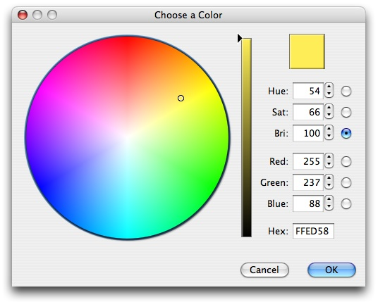

Color PickerThe ColorPicker is a separate subproject that offers detailed control in choosing/browsing colors:  |
Download
UsageThis dialog can be invoked in one simple line: Color newColor = ColorPicker.showDialog(myFrame, originalColor); The ColorPicker itself is a resizable JComponent and it can be placed anywhere in your application, but it was primarily designed to be used in a dialog. |